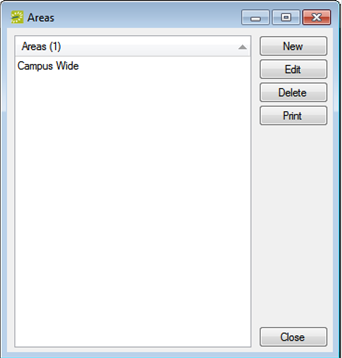
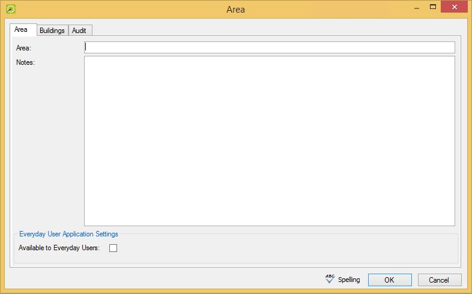
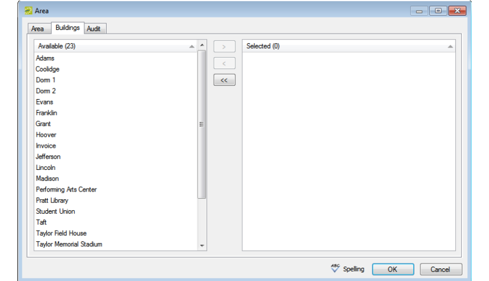

An area is a particular region of indefinite boundary that is used to group buildings, for example, Southeast Region, Campus Wide, Training Sites, and so on. You can use an area as search criteria in
You can configure areas only in

Areas Window

Area Tab of the Area Dialog
In the Area field, enter a name or description for the new area, for example, Southeast Region. The area can be a maximum of 50 characters, including spaces.
In the Notes field, you can enter additional information that is pertinent for the area.
For

Buildings Tab of the Area Dialog
You can click Spelling to spell-check the area description before you save the area.